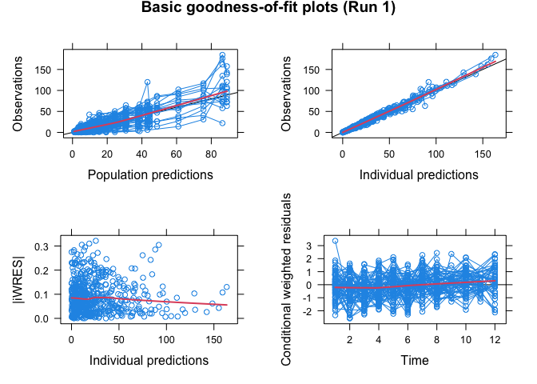

by Andrew C. Hooker, Mats O. Karlsson and E. Niclas Jonsson
Introduction
Xpose 4 is a collection of functions to be used as a model building aid for nonlinear mixed-effects (population) analysis using NONMEM. It facilitates data set checkout, exploration and visualization, model diagnostics, candidate covariate identification and model comparison.
Installation
To install xpose you will need R (>= version 2.2.0).
To install Xpose in R use one of the following methods:
-
latest stable release – From CRAN. Write at the R command line:
install.packages("xpose4") -
Latest development version – from Github. Note that the command below installs the “master” (development) branch; if you want the release branch from Github add
ref="release"to theinstall_github()call.# install.packages("devtools") devtools::install_github("UUPharmacometrics/xpose4")
Running Xpose 4
Start R and load xpose:
To use the classic menu system, type at the R command prompt:
xpose4()Each function is independently available from the command line, once the Xpose library is loaded.
First we create a set of files from a NONMEM run
cur.files <- dir() # current files in temp directory
simprazExample() # write files from an example NONMEM run
new.files <- dir()[!(dir() %in% cur.files)] # the new files created by simprazExampleThen we can import our files to Xpose
xpdb <- xpose.data(1) Display goodness-of-fit plots:
basic.gof(xpdb)
Clean up files that were created to show these examples:
unlink(new.files)More help is available in the online documentation, which can be found by typing (for example) ?xpose4 at the R command line.
Don’t Panic
Andrew Hooker (andrew.hooker at farmaci.uu.se) should be able to get you an answer if you run into trouble. The website https://uupharmacometrics.github.io/xpose4/ should also be of help.
License
Xpose 4 is free software: you can redistribute it and/or modify it under the terms of the GNU Lesser General Public License as published by the Free Software Foundation, either version 3 of the License, or (at your option) any later version.
This program is distributed in the hope that it will be useful, but WITHOUT ANY WARRANTY; without even the implied warranty of MERCHANTABILITY or FITNESS FOR A PARTICULAR PURPOSE. See the GNU Lesser General Public License for more details https://www.gnu.org/licenses/.
Known Bugs
None at present, but there will certainly be a few. Report them at https://github.com/UUPharmacometrics/xpose4/issues.